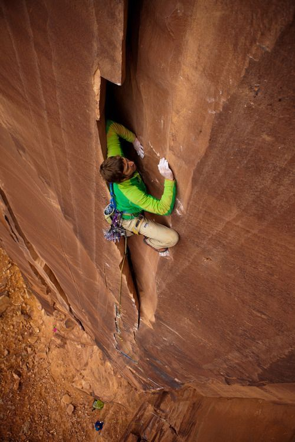
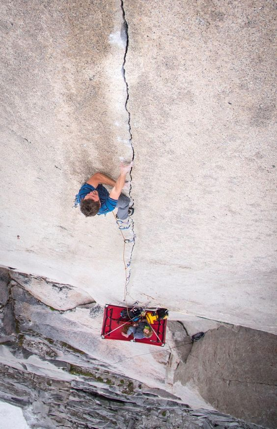
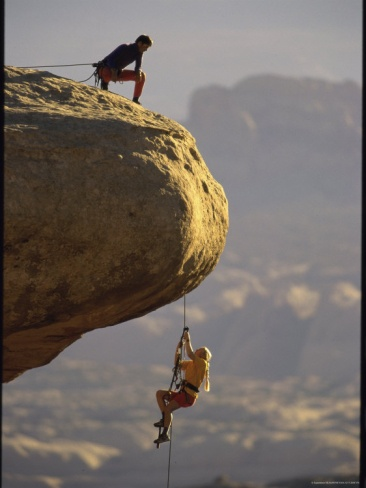
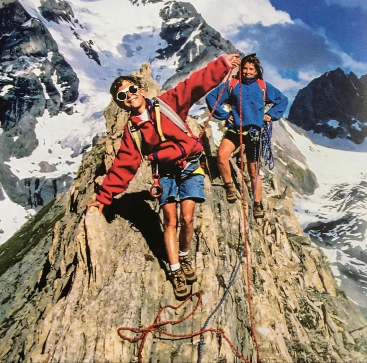
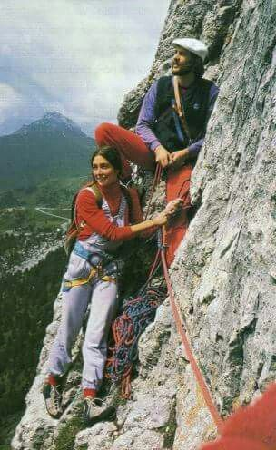
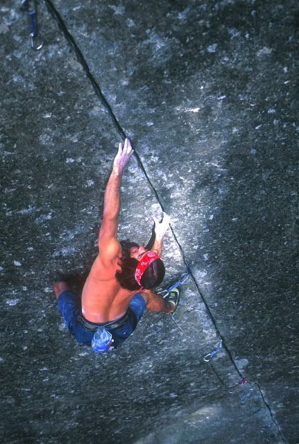
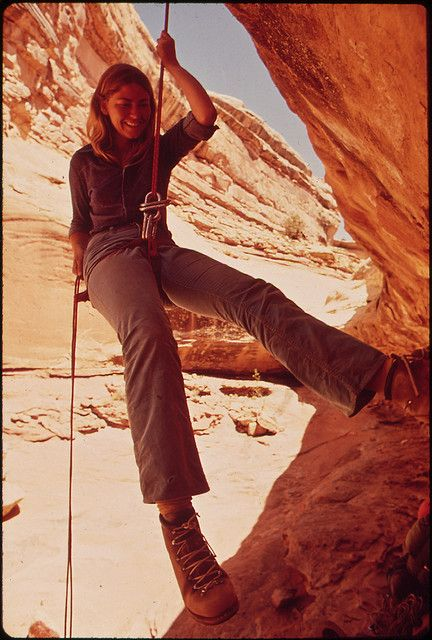
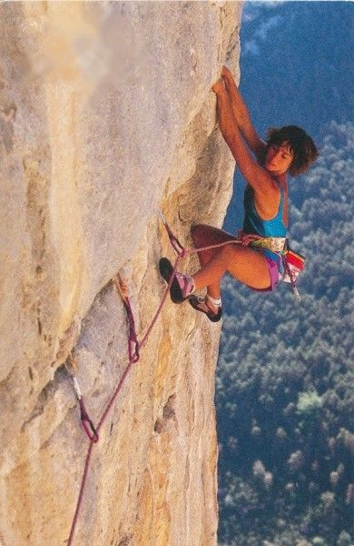
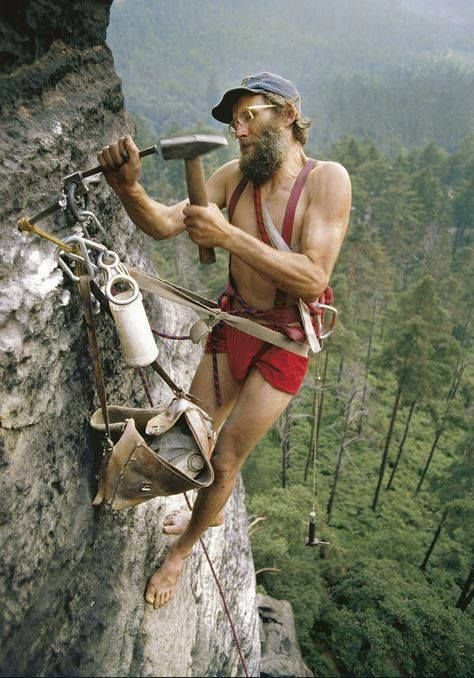

James Mack crack climbing in Utah.

Extremely thin crack climb.

Woman Jumaring up steep edge.

Kids Summit mountain peak.

Retro Climbers hanging out on the wall.

Ron Kauk climbing 5.12 finger crack.

Maze Descent.

A woman traversing right on a crack climb.

Old School style of climbing.